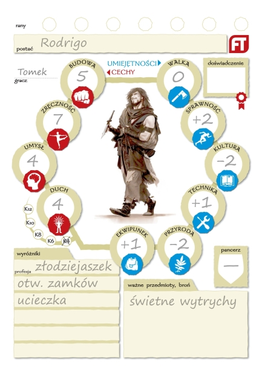
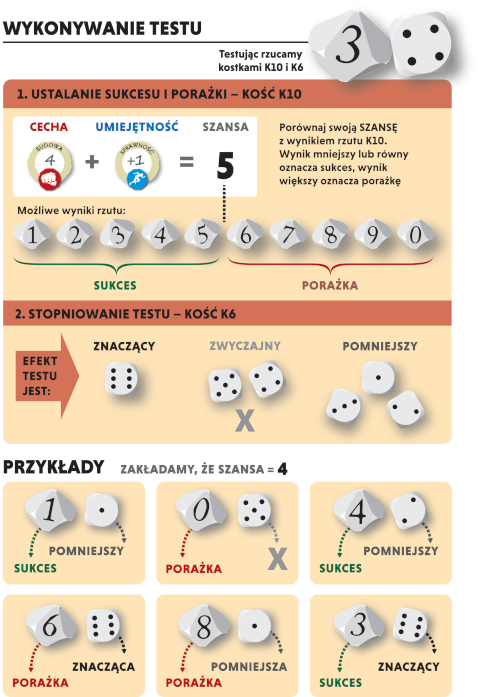
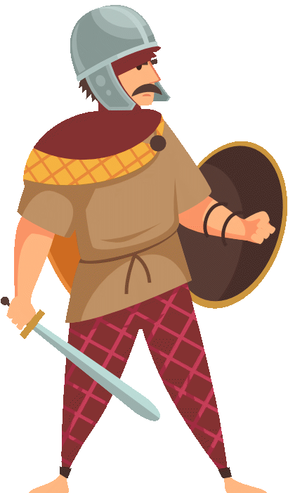
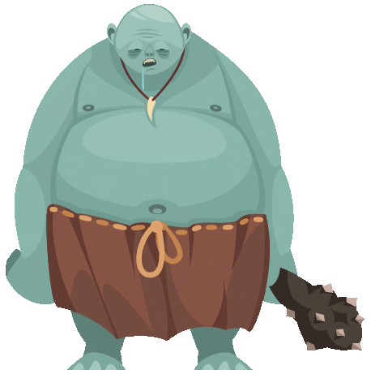
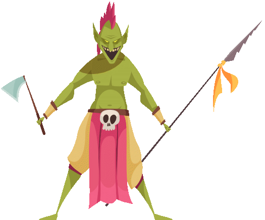
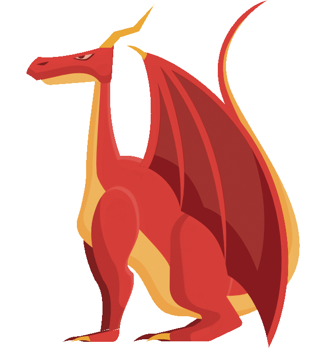

Najprostsza mechanika nazywa się Mechanika, i ma tylko jeden parametr, który nazywa się Parametr. Jeden test Parametru wskazuje, czy postaci wszystko na sesji się udało i czy przeżyła.
Zarith
Dla kogo są te zasady?
Mechanika FastTest powstała, żeby wspomagać określony styl gry, i przede wszystkim w tym jednym stylu się sprawdza.
Zasady mają za zadanie możliwie przyśpieszyć i uprościć mechaniczną stronę rozgrywki, ale dać poczucie, że tradycyjne elementy RPG, np. definiujące starcie, zostały zachowane. Dlatego nie jest tak radykalna jak Mechanika z cytatu powyżej.
Główne założenia:
- Ograniczyć buchalterię — prowadząc sesję masz mnóstwo rzeczy na głowie i pilnowanie, ile który NPC ma jeszcze punktów wytrzymałości, pancerza czy magii, jest wyjątkowo uciążliwe. FastTest pozbywa się tych elementów.
- Wynik testu wypada bezpośrednio na kościach — gracz patrząc na kostki powinien bez liczenia wiedzieć, jaki rezultat wypadł. Bez sprawdzania, w tabelce czy drabince, winien od razu rozumieć stopień sukcesu czy porażki.
- Bardzo szybkie tworzenie postaci — wypełnienie karty postaci zajmuje kilka minut, nie wymaga losowania, a wyróżniki pozwalają na uszczegółowienie koncepcji bohatera.
- Możliwość dwojakiego traktowania przeciwników — NPC-ów i wrogów można opisywać na dwa sposoby: albo przyznać im zestaw cech, tak jak graczom, albo — jeśli preferujesz styl, gdzie tylko gracze rzucają kościami — stworzyć NPC-ów jako zbiór modyfikatorów do testów dla graczy.
Opisanie bohatera
{kind=link}

Każda postać prowadzona przez gracza ma trzy rodzaje współczynników.
Cechy
- przyjmują wartości od 3 do 7
- przykładowe cechy: BUDOWA, ZRĘCZNOŚĆ, UMYSŁ, DUCH
Umiejętności
- przyjmują wartości od -2 do +2, ich suma musi wynieść 0
- reprezentują bardzo ogólne aspekty kompetencji postaci
- są modyfikatorami cech, nie są testowane samodzielnie
- każda cecha może być modyfikowana o umiejętność, jeśli grający uznają że to zestawienie jest adekwatne.
- najlepiej by było ich około 6
- przykładowe umiejętności: WALKA, SPRAWNOŚĆ, KULTURA, TECHNIKA, PRZYRODA, MAGIA, EKWIPUNEK
- EKWIPUNEK - jedyna nietypowa umiejętność, dlatego zasługuje na osobne omówienie - to umiejętność będąca wypadkową zapobiegliwości, dbałości o wyposażenie, znajomiści jego obsługi i umiejętności posługiwania się nim. Test UMYSŁ + EKWIPUNEK odpowiada na typowe pytanie „Czy ja mogłem mieć ze sobą latarkę?”, a np. test ZRĘCZNOŚĆ + EKWIPUNEK na pytanie „Czy utrzymałem miecz w ręce, spadając z konia?”
Wyróżniki
- Za wyróżniki, jeśli są adekwatne do testowanej czynności, dostajesz dodatkowe kości do testu - tzw. kości bonusowe.
- Na twoje wyróżniki składają się koncepcja/profesja oraz zdolności.
Co to jest koncepcja?
Na przykład „Rycerz królestwa”, albo „czarodziej”, albo „złodziejaszek”, ale sprawdzi się też „uciekinier ze splądrowanego miasta” albo „miłośnik drogiego wina”. Coś, co określa twoją postać i jej miejsce w świecie. Na początek, zwłaszcza graczom, którzy lepiej czują się w tradycyjnych grach fabularnych, radzimy, żeby wybrali sobie profesję jako koncepcję.
Co to są zdolności?
Rzeczy w których wykonywaniu postać jest szczególnie dobra. Przykłady: łucznictwo, włamania, skradanie, tropienie, jeździectwo, inżynieria itd. Ich lista jest otwarta, trzeba się tylko upewnić że MG zaakceptuje daną zdolność.
Testowanie
{kind=link}

Wszystkie zdarzenia wymagające testu można sprowadzić do konfrontacji (a więc pewnej formy testu porównawczego) pomiędzy postacią gracza i przeciwnościami, które stają mu na drodze. W tym wypadku obojętne jest, czy przeciwnością są np. wysokie mury, na które trzeba się wspiąć, niekorzystna pogoda, którą trzeba znosić, czy może wściekły ork, atakujący bohatera. Każdy test jest zatem formą przezwyciężania przeciwności.
Przeciwności w grze mają swoje wyróżniki, określane tak samo jak wyróżniki postaci gracza: kostkami. Tyle że kostki przeciwności to kości karne, bo stanowią utrudnienie testu, a nie ułatwienie.
Sposób testowania
Za każdym razem, kiedy postać zamierza podjąć działanie i nie mamy pewności, jaki będzie wynik, MG zarządza wykonanie testu. Testujemy cechę postaci, zmodyfikowaną o umiejętność. I taką parę: cecha+umiejętność MG powinien wskazać graczowi. („Jeśli podnosisz ten ciężki kamień, przetestuj Budowę ze Sprawnością, ” albo „Próbując wydobyć informacje od rozmówcy, przetestuj Umysł z Kulturą”).
Ponieważ cechy mają zakres od 3 do 7, a umiejętności modyfikują je o zakres od -2 do +2, otrzymujemy rozpiętość szansy testów od 1 do 9.
Do testu używamy dwóch kości: K10 i K6. Nie są sumowane, każdy z wyników jest rozpatrywany osobno.
K10: sukces czy porażka?
Jeśli wynik rzutu mieści się w sumie wskazanej cechy i umiejętności, działanie zakończyło się sukcesem. Jeśli wynik rzutu jest większy od tejże sumy, to test zakończył się porażką.
Można też wynik testu interpretować jako odpowiedź na pytanie „Czy udało mi się…?” Wtedy wynik odczytujemy jako „Tak” bądź „Nie”, zależnie od wyniku rzutu.
K6: jak bardzo?
Jeśli wypadnie 6, mamy do czynienia z krytycznym sukcesem lub porażką. Wynik testu można interprtetować jako „Tak i jeszcze…” bądź „Nie i jeszcze…”
Jeśli wypadnie 1, 2 lub 3, mamy do czynienia z pomniejszym wynikiem, rzut można intrerpretować jako „Tak, ale…” bądź „Nie, ale…”.
Wyrzucenie 4 lub 5 nie wpływa na wynik, zatem pozostają „Tak” lub „Nie” (albo zwykły sukces i porażka) odczytane z wyniku K10.
Możliwe wyniki testu
Każdy test daje jeden z sześciu możliwych wyników:
| • Znaczący sukces | (tak, i jeszcze…) |
| • Sukces | (tak) |
| • Pomniejszy sukces | (tak, ale…) |
| • Pomniejsza porażka | (nie, ale…) |
| • Porażka | (nie) |
| • Znacząca porażka | (nie, i jeszcze…) |
Granice szansy
SZANSA — to suma cechy i umiejętności, porównywana podczas testu z kością K10. Szansa powinna przyjmować wartość od 1 do 9. Jeśli z jakichkolwiek powodów wychodzi poza te wartości, każdy punkt poza skalą to dodatkowa kość (karna lub bonusowa) do rzutu. Jeśliby np. bohater miał 8 budowy i +2 walki, suma wyniesie 10, ale: jego szansa w walce wręcz pozostanie 9, zaś dodatkowy 1 punkt zamienia się w kość bonusową. Jeśliby bohater miał np. budowę 2, zaś walkę -2, suma wyniesie 0, ale: szansa pozostaje 1, zaś brakujący 1 punkt zostaje zamieniony w kość karną.
Kości karne i bonusowe
Wszystkie modyfikatory w Fattest przyjmują postać kości, dokładanych do testu. Modyfikator może być pozytywny (kość bonusowa) lub negatywny (kość karna).
Kości bonusowe dodawane są za wyróżniki oraz za wszelkie okoliczności, które można uznać za sprzyjające powodzeniu testu.
MG przyznaje też kości karne — za wszelkie niedogodności przeszkadzające w podjęciu wyzwania, tudzież za wszelkie przeciwdziałania, np. ze strony BNów.
Pozytywne i negatywne kości znoszą się. Kości pozostałe po tej redukcji są dodawane do kości podstawowych. Razem tworzą pulę kości do rzutu.
Po ustaleniu puli kości, gracz decyduje jakiego rodzaju kości dorzuci do testu: czy będą to K10 (zwiększające szansę sukcesu) czy K6 (zmieniające szansę korzystnego stopniowania testu).
Spośród wyrzuconych wyników gracz wybiera dwie kości: jedną K10 i jedną K6 i odczytuje z nich wynik.
Jeśli w puli były kości bonusowe, gracz wybiera dwie kości na których wypadły najkorzystniejsze dla niego wyniki. Jeśli w puli były kości karne, musi wybrać wyniki najmniej korzystne.
Rzut porównawczy
Jeśli dwie postaci próbują robić przeciwstawne rzeczy (obojętnie czy będzie to walka, siłowanie się, czy dyskusja), MG może zarządzić test przeciwstawny. Obie strony rzucają test i porównujemy wyniki: ten kto uzyskał lepszy wynik testu, wygrywa. Jeśli wyniki skrajnie się różnią, zwycięstwo jest wyraźne lub nawet krytyczne.
Jeśli obie strony osiągnęły ten sam wynik, jedna ze stron wciąż może uzyskać pomniejszy sukces:
- jest to postać, która miała większą szansę (czyli sumę CECHA+UMIEJĘTNOŚĆ).
- jeśli nadal nie wyłoniono zwycięzcy, wygrywa ten, kto wyrzucił w czasie testu więcej na kości k10.
- jeśli i to nie wyłoniło zwycięzcy, mamy remis. Zależnie od sytuacji MG może zdecydować że remis rozwiązuje konflikt, bądź że potrzebna jest kolejna runda/dogrywka.
Kilka umiejętności do jednej czynności (zasada opcjonalna)
Jeśli wyda się to adekwatne w danej sytuacji, można zażądać testu z udziałem dwóch, nie jednej umiejętności.
Przykład: Jeśli gracz chce trafić wrażliwe miejsce jelenia, by zabić go jedną strzałą, możesz zarządzić test ZRĘCZNOŚĆ + PRZYRODA + WALKA.
Pamiętajmy, że taki test może wypchnąć szansę grana poza zakres 1-9. W takim razie należy za każdy punkt poza zakresem przyznawać kość karną lub bonusową, zgodnie z opcjonalnymi zasadami.
Szczególnie dobrym obszarem takich wieloumiejętnościowych testów mogą być czary. Przykładowo, zarodziejską kulę ognia możemy potraktować jako kierowaną umysłem siłę przyrody, użytą jako pocisk. Mamy więc UMY + PRZYR + WALK
Tworzenie Postaci
1. Cechy:
Masz 4 cechy (budowa, zręczność, Umysł i Duch).
Rozdziel pomiędzy nie 20 punktów.
Na każdą cechę od 3 do 7 punktów.
2. Umiejętności:
Masz 6 umiejętności.
Mogą mieć wartości od -2 do +2.
Ich suma musi wyjść na 0.
3. Wyróżniki
Masz 3 punkty do rozdziału na wyróżniki. Możesz na jeden wyróżnik wydać max 2 punkty.
Jako pierwszy wyróżnik zapisz koncepcję/profesję swej postaci, następnie dopisz zdolności.
3a. Wada
Jeśli chcesz dostać czwarty punkt na wyróżniki, możesz uzyskać go, w zamian dopisując dodatkowy wyróżnik, który jest wadą/utrapieniem. MG ocenia, czy wada rzeczywiście jest wadą. Dwuznaczne zaleto-wady odpadają.
Przeciwności i wrogowie
Z punktu widzenia mechaniki wszelkie utrudnienia do testów to przeciwności, z któymi gracz się konfrontuje. Nie jest na dobrą sprawę takie istotne, czy przeciwnością jest sromizna skalna, na którą postać się wspina, czy uzbrojony przeciwnik, z którym musi się mierzyć. Obie konfrontacje spowodują, że w czasie testu gracz będzie musiał dorzucić pewną ilość kości utrudnienia.
NPC jako zestaw przeciwności
W odróżnieniu od postaci graczy, bohaterowie niezależni i stwory z bestiariusza nie mają zestawu cech podobnego graczom, a jedynie wyróżniki, użyteczne w określonych sytuacjach. Wyróżniki postaci niezależnych oraz stworów są liczone w kostkach trudności, wystawianych do testu przeciwko graczom. I tak wrogi wojownik może mieć następującą charakterystykę:

Wojownik
- szermierz 4k
- bezczelny awanturnik 3k
- pomniejszy szlachetka 2k
- zwinny 2k
- przystojniak
- jeździec
(Wyróżniki bez wartości cyfrowej traktujemy jako 1k)
W sytuacjach które są adekwatne do rozpisanych wartości, gracze konfrontujący się z owym NPC-em mają odpowiednie utrudnienia do testu.
Może się zdarzyć, że w danej sytuacji będzie adekwatna więcej niż jedna cecha NPCa lub stwora. Należy wtedy wybrać tę o najwyższej wartości, a do tego dodać po 1k za każdą następną adekwatną umiejętność.
Przykład: bohater usiłuje ubić mieczem opisanego powyżej szermierza. W tej sytuacji adekwatnymi wyróżnikami przeciwnika są tu „szermierka 4", po niej zaś „zwinny”. Bierzemy wartość najwyższego wyróżnika, i dodajemy jeszcze jedną kostkę za zwinność. Razem wychodzi 5 kości utrudnienia. Niemało. Biorąc pod uwagę, że zwykle przy konfrontacji gracz posiada 2-3 kości bonusów ze swoich wyróżników, przyjdzie rzucać dwoma lub nawet trzema kośćmi karnymi! Szansa zwycięstwa spada drastycznie!
Uwagi:
- Silny wróg/przeciwność będzie mieć około 4-5 kości trudności przeciw testom graczy. To powinno wyrównać szanse, biorąc pod uwagę że gracze najczęściej wykorzystują te cechy swoich postaci, które są najwyższe.
- Zbiór 6-7 kości karnych będzie już mocno przechylał szalę na niekorzyść gracza, bo szansa zwycięstwa w konfrontacji spadnie o ok. 50-60%.
Przykładowe potwory:

Troll
- wielki 3k
- paskudny 3k
- śmierdzący 4k
- regeneracja 2k
- rozbijacz łbów 2k
- głodny
- głupawy

Goblin
- wojak
- paskudny 2k
- brudas
- tchórz
- stwór ciemności
- złośliwy

Smok
- olbrzymi 4k
- straszny 4k
- ognisty 2k
- opancerzony 3k
- wytrzymały 2k
- chciwy
- złośliwy
- zarozumiały
- latający 2k
Zauważmy, ta metoda ma na celu, by nie tworzyć olbrzymiego bestiariusza stworów, tylko żeby MG mógł na bieżąco stworzyć sobie potrzebnego potwora, przyznając mu kilka wyróżników. I na szybko użyć go w trakcie rozgrywki.
Walka
Nakazujesz graczowi test walki, pozwalając użyć wszelkich bonusów wynikających z wyróżników. Jako reprezentację przeciwdziałania wroga dorzucasz kości karne, uzasadniając je cechami wroga (np że jest silny, otrzaskany w boju, ma dobre uzbrojenie czy pancerz itd). Wynik testu odzwierciedla, jak dobrze graczowi poszło w walce.
Sukces testu oznacza że gracz wygrywa: zadaje ranę, lub zgoła zdominowuje przeciwnika (np. jeśli osiągnął sukces krytyczny).
Porażka oznacza, że to przeciwnik uzyskał przewagę i to on zadaje graczowi ranę.
Jak poważne rany zostały zadane - zależy od używanej broni. Założenie jest takie, że ręczna broń (topór czy miecz) standardowo, czyli przy zwykłym sukcesie zadaje ciężką ranę, przy poważnym sukcesie - śmiertelną. Zaś przy sukcesie pomniejszym, kategoria jest osłabiana do obrażeń lekkich.
Broń taka jak sztylety, kastety czy proce, zadaje standardowo obrażenia lekkie. Natomiast ciężka broń: wszelakie kopie, berdysze, dwuręczne miecze czy ciężkie kusze - zadają obrażenia śmiertelne.
Rany
Jeśli przegrałeś test walki, ponosisz konsekwencje: przeważnie otrzymujesz RANĘ. Rana może być śmiertelna, ciężka, lekka lub może być draśnięciem.
To jakie obrażenia otrzymujesz, zależy od używanej przez przeciwnika broni.
Konsekwencje ran
- za każdą ranę otrzymujesz karną kość do testów.
- ciężko ranny oprócz tego natychmiast testuje przytomność (test Budowy, pamiętaj o uwzględnieniu kości karnych za rany).
- śmiertelnie ranny testuje Budowę albo umiera. Zachowuje przytomność tylko jeżeli wynik testu będzie bardzo dobry.
Kiedy zaznaczasz kropkę ran, podpisz ją, np: „zwichnięta noga” albo „rozcięte ramię” itd. Obok kropki oznacz krzyżyk jeśli rana była opatrzona.
Jak MG ma traktować rany?
Jeśli pamiętasz, że ktoś jest ciężko ranny, możesz kazać mu ponownie testować Budowę, kiedy chce zrobić coś wysiłkowego: negatywny wynik to może być kolejna rana, albo utrata przytomności.
- Rana przeszkadza - ranny musi uważać na zranioną część ciała, oszczędzać ją itp. Inaczej naraża się na pogłębienie urazu. Dlatego każda rana to karna kość do działania, zwłaszcza fizycznego. Nieopatrzone rany są wystarczająco absorbujące, by przeszkadzały też w czynnościach umysłowych.
- Rana grozi pogorszeniem urazu - jeśli ranny dokonuje forsownej czynności, grozi to pogłębieniem urazu; co oznaczamy zakreślając kolejne pole rany. Jest to sprawdzane testem budowy, dokonywanym zaraz po owej forsownej czynności.
- Zignorowanie ran - można w razie potrzeby zignorować rany i dokonać forsownej czynności bez karnych kości od ran. Jednak konsekwencją będzie automatyczne pogłębienie urazów (od razu dopisz kolejną ranę) i test przytomności. Jest więc bardzo możliwe że ranny zbierze się w sobie, dokona wysiłku wbrew ranom, a potem padnie bez zmysłów albo nawet w agonii.
Pancerz
Punkt pancerza to kość bonusowa dodawana do rzutu na Budowę, dokonywanego, kiedy postać gracza odnosi ranę. To znacząco zwiększa szanse na pozytywny wynik tego testu i uniknięcie konsekwencji obrażeń.
Ponadto, jeśli postać nosi pancerz, wynik bardzo dobry („tak, i…”) tego testu oznacza, że uniknęła rany w ogóle.
Magia
Uwaga: większość zasad dotyczących magii jest opcjonalna, używanie wszystkich na raz byłoby bez sensu. Należy spośród podanych możliwości wybrać grupę zasad pasujących do settingu.
- Nie ma listy czarów, użycie magii jest tak samo doraźnie rozpatrywane jak wszelki inne testy. Zasady podane tutaj mają ograniczać możliwości czarodzieja, który inaczej miałby każdy czar na zawołanie w każdej chwili.
- Stosujemy możliwie adekwatny test cecha+umiejętność.
- Z cech zwykle będzie to Duch lub Umysł.
- Umiejętności wybieramy zależne od sytuacji — przyzywanie żywiołaka albo uzdrawianie to zapewne test przyrody, walnięcie w kogoś magicznym pociskiem — pewnie walka, zaś odpędzanie nieumarłych to najpewniej kultura (jako aspekt religijny kultury), zwiększenie możliwości ciała — sprawność, itd.
- Aby rzucać czary, potrzebny jest jakiś związany z czarowaniem wyróżnik.
- Czary są trudne. Standardowa trudność to 2-3 karne kości.
- Czy czar może być łatwy? W zasadzie tak, jeśli gracz dobrze wykombinuje, trudność można obniżyć nawet do 0 kar.
Zasada podstawowa — niepowodzenie czaru
Jeśli czar się nie udał, energia magiczna musi znaleźć inne ujście. Zaproponuj skutek uboczny odpowiedni dla sytuacji (będzie to przedawkowanie magii, manifestacja Chaosu, przerwanie zasłony rzeczywistości — zależnie co pasuje do settingu).
Wyniki testu czarowania:
- Tak, i... — lepszy niż oczekiwany efekt czaru
- Tak — czar udaje się jak zamierzono
- Tak, ale... — występuje pomniejszy skutek uboczny
- Nie, ale... — czar się nie udał, ale nie ma skutków ubocznych
- Nie — czar się nie udał, wylosuj skutek uboczny
- Nie i... — czar się nie udał, i jeszcze losujesz poważny skutek uboczny
Zasada niepowtarzalności
- magia nie lubi się powtarzać. Dlatego za kolejne podobne czary dochodzą kolejne karne kości
- kiedy rzucasz czar, dowiadujesz się, jak bardzo niespokojna jest moc — kiedy próbujesz się z nią połączyć. Możesz wtedy zrezygnować z rzucania czaru, żeby uniknąć negatywnych konsekwencji
Opisanie czarodzieja
Duch jest czwartą cechą, dodawaną do zestawu jeśli świat gry dopuszcza używanie magii lub psioniki.
Przykładowe wyróżniki magiczne: czarodziej, nekromanta, druid, kapłan, szaman itd. Nadają się jako podstawowy wyróżnik, profesja definiująca postać.
Prócz tego można określić dodatkowe wyróżniki, definiujące bardziej szczegółowo, np:
- magia żywiołów (jeden z czterech)
- magia życia (leczenie, kontakt i kontrola)
- magia ducha (umysł, moc)
Lista wyróżników magicznych jest otwarta, ważne tylko by uzgodnić posiadanie danej umiejętności z MG i zdecydować, jakie możliwości postaci wybrany wyróżnik określa.
Magia jako kość zasobu
Można ją wykorzystywać jako miernik zmęczenia tudzież zużycia potencjału magicznego.
Mamy skalę wielkości kości magii:
K12 -> K10 -> K8 -> K6 -> K4-> brak
Postać ma początkowo największą kostkę mocy, jaka mieści się w jego cesze Duch. Zatem mając Duch=7, dostajemy kość mocy K6, a Duch=3 oznacza brak kości magii, brak mocy w ogóle.
Dodatkowo wyróżniki magiczne, np. „czarodziej" albo „magia ognia" podnoszą początkową kość o 1 kategorię. Np. magik o Duchu=5 (co dawałoby mu kość magii K4), ale z wyróżnikami „czarodziej” i „magia ognia” będzie miał ostatecznie kość magii K8.
Maksymalna wartość kości magii to K12.
Test zasobu magii
Wykonywany jest dodatkowo, oprócz normalnego testu opisanego w zasadach ogólnych, określającego czy działanie się powiodło.
Za każdym razem, kiedy gracz odgrywający czarodzieja rzuca czar, rzuca też swoją kością magii. Wyniki 1-2 oznaczają, że kość magii należy zmniejszyć o 1 kategorię. Kiedy najmniejsza kość magii (K4) zmniejsza się na skutek tej procedury, czarodziej pada nieprzytomny z wyczerpania.
Odzyskanie przytomności to test Duch+Sprawność albo Budowa+Sprawność, MG decyduje zależnie od sytuacji.
Uwaga! Bardzo silne działania magiczne mogą powodować automatyczne obniżenie Koski magii, bez testu. Przykładami są silne czary, nieudane czary albo np. zacięte pojedynki mocy.
Niekontrolowana emanacja mocy (opcjonalnie)
Jeśli na kostce mocy wypadnie więcej, niż wynosi cecha Duch, następuje niekontrolowana erupcja mocy (losowana z tabeli). To wygodne przy odwzorowywaniu światów jak Warhammer, gdzie kontrolowanie potężnej magii jest zawsze ryzykowne.
Odzyskiwanie kości magii
Całonocny odpoczynek (sen) przywraca 1 poziom kości magii.
Rozwój postaci
Po zakończeniu przygody, MG przyznaje graczom po kilka (2-5) punktów doświadczenia. Punkty te mogą być wydane na zakup nowych wyróżników bądź zwiększenie wartości wyróżników już posiadanych.
Koszt zakupu nowego wyróżnika jest równy liczbie już posiadanych poziomów wyróżników. Np wojownik (2) z łucznictwem (2), walką mieczem i wytrzymałą budową, ma już 6 wyróżników, i kupienie nowego albo podniesienie któregoś o poziom będzie kosztowało właśnie tyle: 6 punktów doświadczenia.
Uczymy się na błędach (zasada opcjonalna)
Za każdym razem, kiedy bohater poniesie porażkę w istotnym dla sytuacji teście, przyznaj mu kość doświadczenia. (Zwykle używamy tu K6, bo są szeroko dostępne i każdy ma ich sporo. Sprawdzają się też rozmaite countery do gier.) Kość tą gracz może wykorzystać na dwa sposoby:
Po pierwsze, można ją wydać jako kość bonusową w dowolnym teście. Kość tą dodajemy tuż przed rzutem, już po rozliczeniu pozostałych kostek. Jak przy każdej innej kości bonusowej, gracz tuż przed testem decyduje, jaką wybiera wielkość kości - czy K6 czy K10.
Po drugie, jeśli gracz „dowiezie” kość doświadczenia do końca sesji, może ją zamienić na dodatkowy punkt doświadczenia.